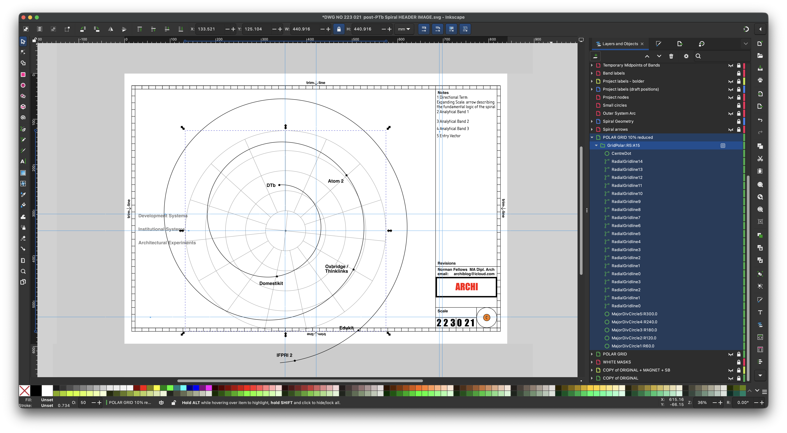

LEARNING | PLEASURE AND FUN | NETWORKS/INFORMATION | HOUSING | PLANNING | STRUCTURES

Figure 1. First public release of the post-PTb Spiral framework. Source: Norman Fellows' repositories
This work defines architecture which may be said to be progressing through a whole catalogue of interconnected studies.
Rather than presenting a linear thesis, the material is structured as a set of entries that can be approached independently while contributing to a wider framework.
The work proceeds through:
This site is not intended to be read sequentially.
It is designed to be navigated.